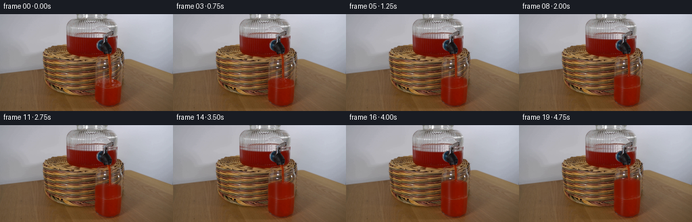
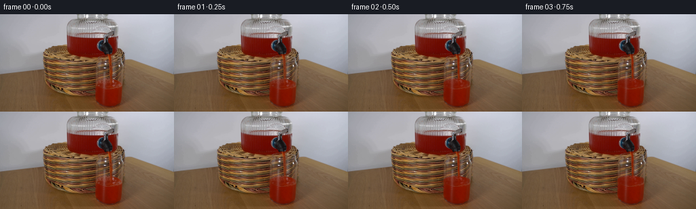
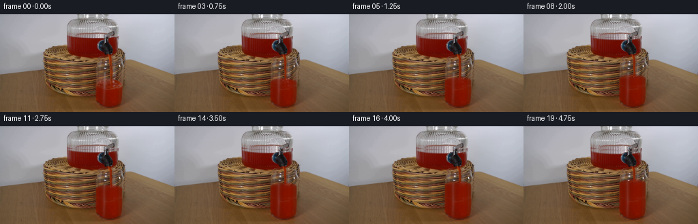
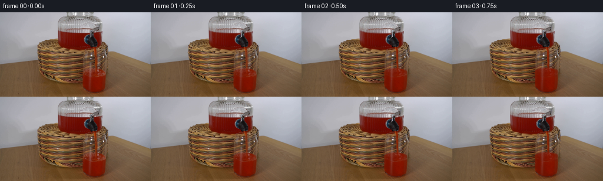

CODING AGENTS AS PIXEL WORLD MODELS
traex/GPT-6.1-Sol · 0064
点击播放 · 原生 RGB 像素
逐轮保存的候选
回放视频、检查图与代码变化。
每份候选均可单独播放。实际图片检查记录在下方工具轨迹中。
候选 01播放与检查图
点击播放 · 原生 RGB 像素


展开代码变化
--- 上一保存版本
+++ 本次保存版本
@@ -0,0 +1,167 @@
+from pathlib import Path
+import numpy as np
+from PIL import Image
+from scipy.ndimage import map_coordinates, gaussian_filter
+import artifact_io
+
+CASE = Path(__file__).resolve().parent
+BASE = np.asarray(Image.open(CASE/'first_frame.png').convert('RGB'), dtype=np.float64)
+H,W = BASE.shape[:2]
+Y,X = np.mgrid[:H,:W].astype(float)
+
+def smooth(a,b,z):
+ v=np.clip((z-a)/(b-a),0,1)
+ return v*v*(3-2*v)
+
+def sample(img,x,y):
+ return np.stack([map_coordinates(img[:,:,c], [y,x],order=1,mode='nearest') for c in range(3)],axis=-1)
+
+def blend(img,col,alpha):
+ return img*(1-alpha[:,:,None])+col*alpha[:,:,None]
+
+# The stationary glass's internal wall, with the perspective of its oval rim.
+# Subpixel coverage is integrated rather than adding hard raster edges.
+S=4
+sy,sx=np.mgrid[:H*S,:W*S].astype(float)
+sy=(sy+.5)/S-.5
+sx=(sx+.5)/S-.5
+
+def average(a):
+ return a.reshape(H,S,W,S).mean(axis=(1,3))
+
+# Extract the colour and the unchanging longitudinal glass reflections from
+# the already submerged part of the reference glass.
+profile=np.median(BASE[112:126],axis=0)
+profile=gaussian_filter(profile,sigma=(.42,0))
+# Genuine reflections are added light, not coloured light passing through ink.
+ref=np.maximum(profile[:,1]-19,0)
+red_profile=profile[:,0]
+colour=np.stack([red_profile,profile[:,1],profile[:,2]],axis=-1)
+# Empty background estimated only underneath the existing narrow free jet.
+# All the rest of the background remains exactly the source photograph.
+bg=BASE.copy()
+for yy in range(64,99):
+ for xx in range(159,167):
+ f=(xx-158)/9.
+ estimate=BASE[yy,158]*(1-f)+BASE[yy,167]*f
+ opacity=smooth(35,80,BASE[yy,xx,0]-BASE[yy,xx,1])
+ bg[yy,xx]=BASE[yy,xx]*(1-opacity)+estimate*opacity
+
+# Constant discharge; slight reduction in pressure with the reservoir head.
+# Cylinder cross section ratio keeps the dispenser level and receiving level
+# linked by conservation of volume.
+levels=np.zeros(20)
+for i in range(1,20):
+ levels[i]=levels[i-1]+(20.6/19)*np.sqrt(max(.05,1-.285*levels[i-1]/28.5))
+
+
+def body_fraction(level,t):
+ # The light traverses increasing depth as the eye scans the elliptical
+ # free surface from its back edge to its front edge.
+ cx=159.6
+ rx=19.9
+ u=(sx-cx)/rx
+ oval=np.sqrt(np.maximum(0,1-u*u))
+ wave=(.19*np.sin((sx-160)*.61-t*8.0)+
+ .12*np.sin((sx-162)*1.16+t*11.0))*np.exp(-((sx-162)/18)**2)
+ if t==0: wave=np.zeros_like(wave)
+ back=level-7.0*oval+wave
+ front=level+7.0*oval+wave
+ depth=np.clip((sy-back)/np.maximum(.75,front-back),0,1)
+ # Thin curved wall at the sides remains outside the fluid volume.
+ side=smooth(0,.75,rx-np.abs(sx-cx))
+ side*=smooth(0,.8,179.7-sx)
+ # Curved thick base, never overwritten by rising fluid.
+ bottom=133.8-5.8*(np.abs(u)**3)
+ bottommask=1-smooth(bottom-1,bottom+1,sy)
+ return depth,side*bottommask,back,front
+
+old_depth,wall,_,_=body_fraction(103.2,0)
+
+frames=[BASE.astype(np.uint8)]
+for i in range(1,20):
+ t=i/4.
+ rise=levels[i]
+ level=103.2-rise
+ frame=BASE.copy()
+ # Lowering the liquid surface inside the stationary dispenser. Reuse
+ # the original optical surface cross section, preserving tap and edges.
+ fall=rise*.285
+ shift=np.full_like(Y,fall)
+ shifted=sample(BASE,X,Y-shift)
+ chroma=smooth(24,55,BASE[:,:,0]-BASE[:,:,1])
+ jar_window=smooth(96.8,100.1,X)*(1-smooth(171.0,173.5,X))
+ jar_window*=smooth(31.0,34.1,Y)*(1-smooth(35.1+fall,36.5+fall,Y))
+ drain=jar_window*chroma
+ frame=blend(frame,shifted,drain)
+
+ # The continuous falling jet follows the original spout position. Its
+ # small changes in thickness and advected glints are deliberately kept
+ # beneath a pixel, as appropriate for a steady unbroken liquid flow.
+ jet_top=63.1
+ hit=level-4.2
+ oldjetregion=smooth(62.7,65,Y)*(1-smooth(97.5,100,Y))
+ oldjetregion*=smooth(158.6,160.3,X)*(1-smooth(164.7,166.4,X))
+ startup=smooth(0,.5,t)
+ frame=blend(frame,bg,oldjetregion*startup)
+ z=np.maximum(0,Y-jet_top)
+ center=161.85+.022*z+.13*np.sin(z*.44-t*10.3)+.07*np.sin(z*.82-t*14.1)
+ radius=(1.57-.006*z)*(1-.034*rise/20)
+ radius+=.10*np.sin(z*.67-t*13.8)+.07*np.sin(z*1.1-t*21)
+ dx=X-center
+ jet=smooth(-.58,.50,radius-np.abs(dx))
+ jet*=smooth(62.3,64.1,Y)*(1-smooth(hit+.2,hit+1.7,Y))
+ adv=.5*np.sin(z*1.07-t*27)+.5*np.sin(z*.39-t*18)
+ hi=np.exp(-((dx+.58)/.52)**2)
+ jetcol=np.empty_like(BASE)
+ jetcol[:,:,0]=125+13*hi+8*adv+8*np.exp(-z/9)
+ jetcol[:,:,1]=35+13*hi+4*adv
+ jetcol[:,:,2]=7+5*hi+2*adv
+ frame=blend(frame,jetcol,jet*startup)
+
+ # In the glass, Beer--Lambert attenuation covers the newly submerged
+ # basket, leaving the stationary reflections on the glass wall in place.
+ depth,wall,back,front=body_fraction(level,t)
+ delta=np.maximum(0,depth-old_depth)
+ opacity=average((1-np.exp(-5.0*delta))*wall)
+ target=np.broadcast_to(colour[None,:,:],BASE.shape).copy()
+ # Gentle illumination variation and stationary fine image texture.
+ target[:,:,0]+= .55*np.sin((Y-98)*.34)+.85*np.sin(X*.57+Y*.41)
+ target[:,:,0]+= 1.2*np.clip((110-Y)/30,0,1)
+ target[:,:,1]+= .18*np.sin(Y*.91+X*.63)
+ frame=blend(frame,target,opacity)
+
+ # A fresh small impact dent, weak capillary ripples, and a few bright
+ # aerated flecks follow the rising free surface, not the glass.
+ active=startup
+ surface_center=level-1.0
+ u=(X-159.6)/19.9
+ edge=np.sqrt(np.maximum(0,1-u*u))
+ surf=(1-smooth(19,20.3,np.abs(X-159.6)))
+ surf*=smooth(level-7*edge-.2,level-7*edge+.7,Y)
+ surf*=1-smooth(level+7*edge-.3,level+7*edge+.6,Y)
+ # Reflection of the jet on the surface, with concentric elliptical waves.
+ dist=np.sqrt(((X-162.7)/1.0)**2+((Y-hit)/.31)**2)
+ ripple=np.sin(dist*2.5-t*14.5)*np.exp(-dist/5.5)
+ ripple*=surf*active
+ frame[:,:,0]+=ripple*4.2
+ frame[:,:,1]+=ripple*2.4
+ frame[:,:,2]+=ripple*1.1
+ for j in range(4):
+ phase=t*(2.4+j*.13)+j*1.69
+ bx=162.6+(2.0+1.0*j)*np.sin(phase*.91)
+ by=hit+.5+(.5+.22*j)*np.cos(phase*1.12)
+ rad=.42+.12*np.sin(phase*1.31)**2
+ spot=np.exp(-((X-bx)**2/(rad*rad)+(Y-by)**2/(rad*.64)**2)/2)
+ spot*=surf*active*(.25+.2*np.sin(phase)**2)
+ c=np.broadcast_to(np.array([181.,102.,88.]),BASE.shape)
+ frame=blend(frame,c,spot)
+ # Tiny moving highlight where the falling column bends into the surface.
+ glint=np.exp(-((X-164.5-.35*np.sin(t*7))/.8)**2-
+ ((Y-hit-.65)/.6)**2)*.28*active*surf
+ frame=blend(frame,np.broadcast_to([174.,104.,91.],BASE.shape),glint)
+ frames.append(np.clip(np.rint(frame),0,255).astype(np.uint8))
+frames=np.stack(frames)
+artifact_io.save(frames,CASE)
+if __name__=='__main__':
+ print('Saved',frames.shape,'RGB frames. Final level rise:',round(float(levels[-1]),2))
候选 02播放与检查图
点击播放 · 原生 RGB 像素


展开代码变化
--- 上一保存版本
+++ 本次保存版本
@@ -123,8 +123,21 @@
# basket, leaving the stationary reflections on the glass wall in place.
depth,wall,back,front=body_fraction(level,t)
delta=np.maximum(0,depth-old_depth)
- opacity=average((1-np.exp(-5.0*delta))*wall)
+ # The previous impact patch becomes quiescent once it is below the new
+ # free surface. This avoids leaving an obsolete surface visible underwater.
+ settled=smooth(.7,3.4,rise)*smooth(.72,1.0,depth)*old_depth
+ settled*=1-smooth(107.5,112.0,sy)
+ coverage=np.maximum(1-np.exp(-5.0*delta),settled)
+ opacity=average(coverage*wall)
target=np.broadcast_to(colour[None,:,:],BASE.shape).copy()
+ # Preserve the isolated achromatic highlights on the outer glass wall.
+ # Unlike the woven background these reflected lights do not pass through
+ # the red liquid, and therefore must not turn red as the glass fills.
+ neutral=BASE.min(axis=-1)/np.maximum(1,BASE.max(axis=-1))
+ clear_glint=np.maximum(BASE.min(axis=-1)-85,0)*smooth(.70,.89,neutral)
+ wall_stripes=(np.exp(-((X-154.0)/2.0)**2)+
+ np.exp(-((X-175.3)/1.1)**2))
+ target+=clear_glint[:,:,None]*np.minimum(1,wall_stripes)[:,:,None]
# Gentle illumination variation and stationary fine image texture.
target[:,:,0]+= .55*np.sin((Y-98)*.34)+.85*np.sin(X*.57+Y*.41)
target[:,:,0]+= 1.2*np.clip((110-Y)/30,0,1)
可观测工具轨迹
实际执行的命令与返回图片。
命令 1exit 0
/bin/bash -lc 'ls -la && cat prompt.txt && cat GENERATION_RULES.md'
命令 2exit 0
/bin/bash -lc "cat artifact_io.py; python - <<'PY'
from PIL import Image
import numpy as np
im=np.array(Image.open('first_frame.png'))
print(im.shape)
# RGB to ANSI not actual tool visualization forbidden? use textual color classifications
im=np.array(Image.open('first_frame.png').resize((96,54)))
for row in im:
s=''
for r,g,b in row.astype(float):
if r>g*1.45 and r>b*1.4 and r>70:c='R' if r>150 else 'r'
elif max(r,g,b)<45:c='#'
elif max(r,g,b)<85:c='O'
elif r>g*1.13 and g>b*1.13:c='y' if r>140 else 'o'
elif min(r,g,b)>220:c=' '
elif min(r,g,b)>170:c='.'
elif min(r,g,b)>125:c='-'
else:c='+'
s+=c
print(s)
PY"命令 3exit 0
/bin/bash -lc "python - <<'PY'
from PIL import Image
import numpy as np
im=np.array(Image.open('first_frame.png').resize((128,72))).astype(float)
# luminance ascii
lum=im@np.array([.2126,.7152,.0722])
chars='@%#*+=-:. '
for row in lum:
print(''.join(chars[min(9,int(v/256*10))] for v in row))
print('\\nRGB samples at grid x every8 y every6:')
im=np.array(Image.open('first_frame.png'))
for y in range(0,144,6):
print('y=',y, ' '.join(f'{x}:{tuple(im[y,x])}' for x in range(60,200,8)))
PY"命令 4exit 0
/bin/bash -lc "python - <<'PY'
from PIL import Image
import numpy as np
im=np.array(Image.open('first_frame.png')).astype(float)
for y in range(25,142):
s=''
for x in range(125,188):
r,g,b=im[y,x]
if r>1.8*g and r>1.8*b and r-g>45:c='R' if r>135 else 'r'
elif max(r,g,b)<32:c='@'
elif max(r,g,b)<55:c='#'
elif abs(r-g)<16 and abs(g-b)<16:c='.' if r>160 else '+' if r>110 else '=' if r>65 else '%'
elif r>g and g>b:c='Y' if r>150 else 'o' if r>110 else 'x' if r>75 else ':'
else:c='.' if r>160 else '+' if r>110 else '='
s+=c
print(f'{y:03d} {s}')
PY"命令 5exit 0
/bin/bash -lc "python - <<'PY'
from PIL import Image
import numpy as np
im=np.array(Image.open('first_frame.png')).astype(int)
for y in range(55,140):
red=(im[y,:,0]-im[y,:,1]>60)&(im[y,:,1]<65)
hi=(im[y].min(axis=-1)>115)
def seg(m,a,b):
xs=np.where(m[a:b])[0]+a
if len(xs)==0:return ''
groups=np.split(xs,np.where(np.diff(xs)>1)[0]+1)
return ','.join(f'{g[0]}-{g[-1]}' for g in groups)
print(y,'red:',seg(red,132,187),'light:',seg(hi,140,188))
print('specific RGB y72-104 step2')
for y in range(70,106,2):
print('y',y,' '.join(f'{x}={tuple(im[y,x])}' for x in range(136,183,2)))
PY"命令 6exit 0
/bin/bash -lc "python - <<'PY'
from PIL import Image
import numpy as np
im=np.array(Image.open('first_frame.png')).astype(float)
chars='@%#*+=-:. '
for y in range(58,143):
print(f'{y:03d} '+''.join(chars[min(9,int(v/256*10))] for v in im[y,128:193]@np.array([.2126,.7152,.0722])))
# lists endpoints of chromatic discontinuities x140 near liquid
for x in [137,138,139,140,141,142,143,144,145,146,147,148,149,150,151,152,153,154,155,156,157,158,159,160,161,162,163,164,165,166,167,168,169,170,171,172,173,174,175,176,177,178,179,180,181]:
print(x, [(y, tuple(im[y,x].astype(int))) for y in [64,68,72,76,80,84,88,92,96,100,104,108]])
PY"命令 7exit 0
/bin/bash -lc "cat > generate.py <<'PY'
from pathlib import Path
import numpy as np
from PIL import Image
from scipy.ndimage import map_coordinates, gaussian_filter
import artifact_io
CASE = Path(__file__).resolve().parent
BASE = np.asarray(Image.open(CASE/'first_frame.png').convert('RGB'), dtype=np.float64)
H,W = BASE.shape[:2]
Y,X = np.mgrid[:H,:W].astype(float)
def smooth(a,b,z):
v=np.clip((z-a)/(b-a),0,1)
return v*v*(3-2*v)
def sample(img,x,y):
return np.stack([map_coordinates(img[:,:,c], [y,x],order=1,mode='nearest') for c in range(3)],axis=-1)
def blend(img,col,alpha):
return img*(1-alpha[:,:,None])+col*alpha[:,:,None]
# The stationary glass's internal wall, with the perspective of its oval rim.
# Subpixel coverage is integrated rather than adding hard raster edges.
S=4
sy,sx=np.mgrid[:H*S,:W*S].astype(float)
sy=(sy+.5)/S-.5
sx=(sx+.5)/S-.5
def average(a):
return a.reshape(H,S,W,S).mean(axis=(1,3))
# Extract the colour and the unchanging longitudinal glass reflections from
# the already submerged part of the reference glass.
profile=np.median(BASE[112:126],axis=0)
profile=gaussian_filter(profile,sigma=(.42,0))
# Genuine reflections are added light, not coloured light passing through ink.
ref=np.maximum(profile[:,1]-19,0)
red_profile=profile[:,0]
colour=np.stack([red_profile,profile[:,1],profile[:,2]],axis=-1)
# Empty background estimated only underneath the existing narrow free jet.
# All the rest of the background remains exactly the source photograph.
bg=BASE.copy()
for yy in range(64,99):
for xx in range(159,167):
f=(xx-158)/9.
estimate=BASE[yy,158]*(1-f)+BASE[yy,167]*f
opacity=smooth(35,80,BASE[yy,xx,0]-BASE[yy,xx,1])
bg[yy,xx]=BASE[yy,xx]*(1-opacity)+estimate*opacity
# Constant discharge; slight reduction in pressure with the reservoir head.
# Cylinder cross section ratio keeps the dispenser level and receiving level
# linked by conservation of volume.
levels=np.zeros(20)
for i in range(1,20):
levels[i]=levels[i-1]+(20.6/19)*np.sqrt(max(.05,1-.285*levels[i-1]/28.5))
def body_fraction(level,t):
# The light traverses increasing depth as the eye scans the elliptical
# free surface from its back edge to its front edge.
cx=159.6
rx=19.9
u=(sx-cx)/rx
oval=np.sqrt(np.maximum(0,1-u*u))
wave=(.19*np.sin((sx-160)*.61-t*8.0)+
.12*np.sin((sx-162)*1.16+t*11.0))*np.exp(-((sx-162)/18)**2)
if t==0: wave=np.zeros_like(wave)
back=level-7.0*oval+wave
front=level+7.0*oval+wave
depth=np.clip((sy-back)/np.maximum(.75,front-back),0,1)
# Thin curved wall at the sides remains outside the fluid volume.
side=smooth(0,.75,rx-np.abs(sx-cx))
side*=smooth(0,.8,179.7-sx)
# Curved thick base, never overwritten by rising fluid.
bottom=133.8-5.8*(np.abs(u)**3)
bottommask=1-smooth(bottom-1,bottom+1,sy)
return depth,side*bottommask,back,front
old_depth,wall,_,_=body_fraction(103.2,0)
frames=[BASE.astype(np.uint8)]
for i in range(1,20):
t=i/4.
rise=levels[i]
level=103.2-rise
frame=BASE.copy()
# Lowering the liquid surface inside the stationary dispenser. Reuse
# the original optical surface cross section, preserving tap and edges.
fall=rise*.285
shift=np.full_like(Y,fall)
shifted=sample(BASE,X,Y-shift)
chroma=smooth(24,55,BASE[:,:,0]-BASE[:,:,1])
jar_window=smooth(96.8,100.1,X)*(1-smooth(171.0,173.5,X))
jar_window*=smooth(31.0,34.1,Y)*(1-smooth(35.1+fall,36.5+fall,Y))
drain=jar_window*chroma
frame=blend(frame,shifted,drain)
# The continuous falling jet follows the original spout position. Its
# small changes in thickness and advected glints are deliberately kept
# beneath a pixel, as appropriate for a steady unbroken liquid flow.
jet_top=63.1
hit=level-4.2
oldjetregion=smooth(62.7,65,Y)*(1-smooth(97.5,100,Y))
oldjetregion*=smooth(158.6,160.3,X)*(1-smooth(164.7,166.4,X))
startup=smooth(0,.5,t)
frame=blend(frame,bg,oldjetregion*startup)
z=np.maximum(0,Y-jet_top)
center=161.85+.022*z+.13*np.sin(z*.44-t*10.3)+.07*np.sin(z*.82-t*14.1)
radius=(1.57-.006*z)*(1-.034*rise/20)
radius+=.10*np.sin(z*.67-t*13.8)+.07*np.sin(z*1.1-t*21)
dx=X-center
jet=smooth(-.58,.50,radius-np.abs(dx))
jet*=smooth(62.3,64.1,Y)*(1-smooth(hit+.2,hit+1.7,Y))
adv=.5*np.sin(z*1.07-t*27)+.5*np.sin(z*.39-t*18)
hi=np.exp(-((dx+.58)/.52)**2)
jetcol=np.empty_like(BASE)
jetcol[:,:,0]=125+13*hi+8*adv+8*np.exp(-z/9)
jetcol[:,:,1]=35+13*hi+4*adv
jetcol[:,:,2]=7+5*hi+2*adv
frame=blend(frame,jetcol,jet*startup)
# In the glass, Beer--Lambert attenuation covers the newly submerged
# basket, leaving the stationary reflections on the glass wall in place.
depth,wall,back,front=body_fraction(level,t)
delta=np.maximum(0,depth-old_depth)
opacity=average((1-np.exp(-5.0*delta))*wall)
target=np.broadcast_to(colour[None,:,:],BASE.shape).copy()
# Gentle illumination variation and stationary fine image texture.
target[:,:,0]+= .55*np.sin((Y-98)*.34)+.85*np.sin(X*.57+Y*.41)
target[:,:,0]+= 1.2*np.clip((110-Y)/30,0,1)
target[:,:,1]+= .18*np.sin(Y*.91+X*.63)
frame=blend(frame,target,opacity)
# A fresh small impact dent, weak capillary ripples, and a few bright
# aerated flecks follow the rising free surface, not the glass.
active=startup
surface_center=level-1.0
u=(X-159.6)/19.9
edge=np.sqrt(np.maximum(0,1-u*u))
surf=(1-smooth(19,20.3,np.abs(X-159.6)))
surf*=smooth(level-7*edge-.2,level-7*edge+.7,Y)
surf*=1-smooth(level+7*edge-.3,level+7*edge+.6,Y)
# Reflection of the jet on the surface, with concentric elliptical waves.
dist=np.sqrt(((X-162.7)/1.0)**2+((Y-hit)/.31)**2)
ripple=np.sin(dist*2.5-t*14.5)*np.exp(-dist/5.5)
ripple*=surf*active
frame[:,:,0]+=ripple*4.2
frame[:,:,1]+=ripple*2.4
frame[:,:,2]+=ripple*1.1
for j in range(4):
phase=t*(2.4+j*.13)+j*1.69
bx=162.6+(2.0+1.0*j)*np.sin(phase*.91)
by=hit+.5+(.5+.22*j)*np.cos(phase*1.12)
rad=.42+.12*np.sin(phase*1.31)**2
spot=np.exp(-((X-bx)**2/(rad*rad)+(Y-by)**2/(rad*.64)**2)/2)
spot*=surf*active*(.25+.2*np.sin(phase)**2)
c=np.broadcast_to(np.array([181.,102.,88.]),BASE.shape)
frame=blend(frame,c,spot)
# Tiny moving highlight where the falling column bends into the surface.
glint=np.exp(-((X-164.5-.35*np.sin(t*7))/.8)**2-
((Y-hit-.65)/.6)**2)*.28*active*surf
frame=blend(frame,np.broadcast_to([174.,104.,91.],BASE.shape),glint)
frames.append(np.clip(np.rint(frame),0,255).astype(np.uint8))
frames=np.stack(frames)
artifact_io.save(frames,CASE)
if __name__=='__main__':
print('Saved',frames.shape,'RGB frames. Final level rise:',round(float(levels[-1]),2))
PY
python generate.py"命令 8exit 0
/bin/bash -lc "python - <<'PY'
from PIL import Image
import numpy as np
b=np.array(Image.open('first_frame.png')).astype(int)
a=np.array(Image.open('frames/19.png')).astype(int)
chars='@%#*+=-:. '
for y in range(68,116):
print(f'{y:03d} '+''.join(chars[min(9,int(v/256*10))] for v in a[y,133:188]@np.array([.2126,.7152,.0722])))
print('change ranges & mean changes')
for i in [1,5,10,15,19]:
f=np.array(Image.open(f'frames/{i:02}.png')).astype(int)
d=np.abs(f-b).max(-1);y,x=np.where(d>0)
print(i,len(x),int(d.max()),np.abs(f-b).mean(),(x.min(),y.min(),x.max(),y.max()))
print('y x rgb final glass:')
for y in range(73,116,2):
print(y,[(x,tuple(a[y,x])) for x in [140,143,147,153,157,162,166,170,175,178]])
PY"命令 9exit 0
/bin/bash -lc "python generate.py && python - <<'PY'
from PIL import Image
import numpy as np
from pathlib import Path
im=np.array(Image.open('first_frame.png').convert('RGB'))
assert np.array_equal(im,np.array(Image.open('frames/00.png')))
f=np.stack([np.array(Image.open(f'frames/{i:02d}.png')) for i in range(20)])
assert f.shape==(20,144,256,3) and f.dtype==np.uint8
p=np.load('pixels.npz')['pixels']
assert p.shape==(144,256,20)
for i in [1,5,10,19]:
a=f[i].astype(float);b=f[i-1].astype(float)
print(i,'mean temporal difference',np.abs(a-b).mean(),'max',np.abs(a-b).max())
print('validated output files:', ', '.join(x.name for x in Path('.').iterdir() if x.name in ['pixels.npz','index.html','generate.py','frames']))
PY"保存候选 2 份；完成命令 9 次；可验证图片返回 0 张。原始 API 响应与完整日志保留在本地。